Preparation
The Loaded 7 engine requires a MySQL database for storing information. Before installing Loaded 7, please make sure that a MySQL database has been created. You can confirm that using your hosting provider's control panel phpMyAdmin tool.
You can check the detailed tutorial on How to create a MySQL database. If you face any difficulties at this stage, please contact your hosting provider for support.
When creating a MySQL database, you'll need to specify its name, the user name and password and remember the database server address. Save all these data as you'll need them for the Loaded 7 installation.
Loaded 7 engine installation
1. Server requirements
Make sure that your hosting meets the Loaded 7 system requirements:
The Linux Operating System
The Apache Web Server version 1.3 or later, with mod_ssl.
MySQL database version 4.1.13+ or 5.0.7+
PHP 5.3+ (with MySQLi extension)
- PHP Settings:
- - PHP Setting ON
- FILE_UPLOADS
- - PHP Setting OFF
- REGISTER_GLOBALS
- MAGIC_QUOTES
- SESSION.AUTO_START
- SESSION.USE_TRANS_SID
- - POST_MAX_SIZE: 10M
- - UPLOAD_MAX_FILESIZE: 10M
- - PHP Setting ON
- PHP Extensions – REQUIRED
- - mySQLi
- - GD
- - CURL
- - OPENSSL
- - Phar
- PHP Settings:
PHP when compiled with Suhosin/Hardened PHP not tested yet.
suPHP will work in the server environment the same way as PHP enabled.
Please note: ionCube Loader (version 4.4.1 or later) is a required component for the functionality of paid addons such as Pro and B2B versions of Loaded 7 as well as some individual native and third party addons.
2. Downloading
To install Loaded 7, you'll need to download the engine from the official website www.loadedcommerce.com/home/download/.
Enter your name and e-mail in the Downloads section and click the 'Get Free Download' button.
Make sure that the release you're downloading is compatible with your template (that's indicated in the template requirements). All Loaded 7 releases are available on GitHub.
3. Extracting files
Having downloaded Loaded 7, you'll need to extract the files and folders.
You can do it with WinZip (PC), StuffitExpander (MAC) and other similar software.
Please check the guides on how to unzip files: WinZip (PC) and StuffitExpander (MAC).
Note: if in your hosting control panel the 'Extract/Unarchive' function is available, you can upload the .zip archive to the server and unzip it there.
4. Uploading the Loaded 7 files
If you have unzipped the files locally on your computer, you will need to upload them to your hosting server.
You can do that with the hosting control panel File Manager or with an FTP manager like FileZilla, TotalCommander, CuteFTP, etc.
Please check the guides: How to upload files to server or How to upload files to a server using cpanel (WebHost manager, WHM).
The contents of the uploaded packcage have to be copied to your server. The folder structure after the upload should look like this:
/home/user/public_html/
/srv/www/htdocs/
/usr/local/htdocs/
/var/www/vhosts/domain.com/httpdocs/
Below is what the uploaded packcage contents look like after unzipping:
loadedcommerce/
readme.txt
license.txt
5. Loaded 7 file and folder permissions
First of all, rename the configuration file 'includes/config_dist.php' to 'includes/config.php'
The following files and folders have to be writable:
| Files | Writable |
|---|---|
| includes/config.php | Yes |
| Folders | Writable |
|---|---|
| admin/images/graphs | Yes |
| images/banners | Yes |
| images/categories | Yes |
| images/manufacturers | Yes |
| images/products | Yes |
| includes/work | Yes |
6. Installing the Loaded 7 engine
When all the required files are uploaded to the server, you can start the Loaded 7 engine installation. Open your browser and enter the domain name and the path to your Loaded 7 folder into the browser adress bar: 'domain_name/path_to_loaded7_directory/install.' Then go to this page. You'll see a welcoming message. Follow the instructions on the welcome page to install Loaded 7.
Step 1: Welcome
Choose the installation method: 'Upgrade from 6.x Version' (if you're using an older version) or 'New Install' (for a clean installation).
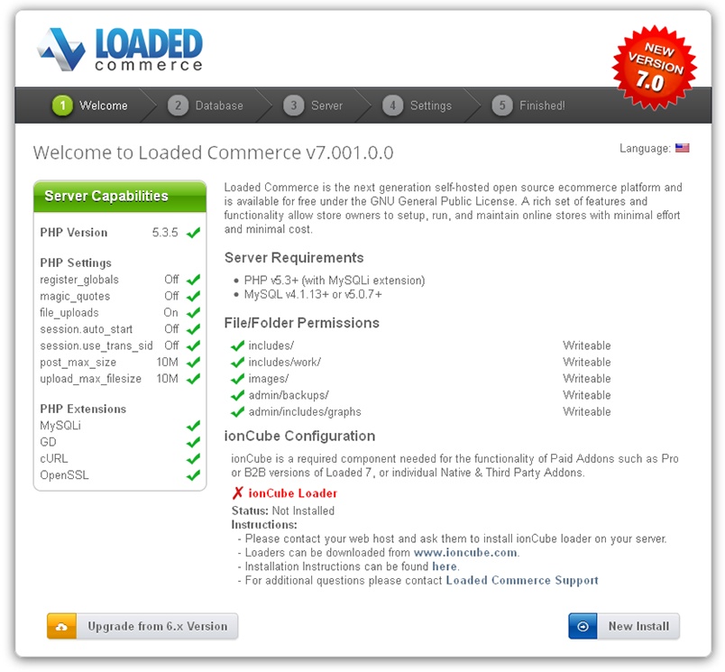In this example, we're performing a new installation 'New Install.'
Step 2: Database
Input the database server details
| Setting | Description | Possible Value |
|---|---|---|
| Server Address | The address of the database server (hostname or IP address). | localhost |
| Username | The username which is used to connect to the database server. | user |
| Password | The password used together with the username to connect to the database server. | p@ssw0rd |
| Database Name | The name of the database to hold the data in. | loadedcommerce |
| Database Type | The database server software that is used. | MySQL |
| Table Prefix | The prefix to use for the database tables. | lc_ |
To get a prompt, hover over the info icon after the field name.
Fill in the required fields and click the 'Continue' button.
Step 3: Web Server
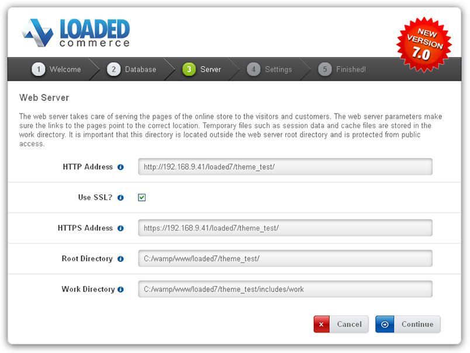Make sure that all the necessary directories have writing permissions.
After you've checked that, click the 'Continue' button.
Step 4: Settings
Fill in the shop owner and administrator data.
Attention! Save the username and admin password somewhere as they are required for store management.
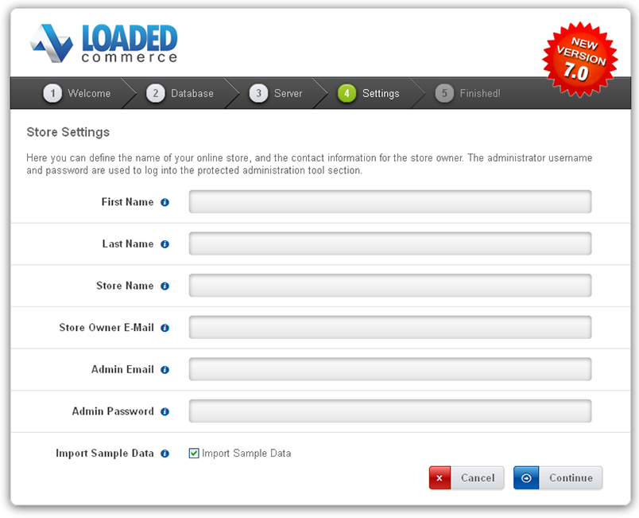
After you've filled it in, click the 'Continue' button.
Step 5: Finished!
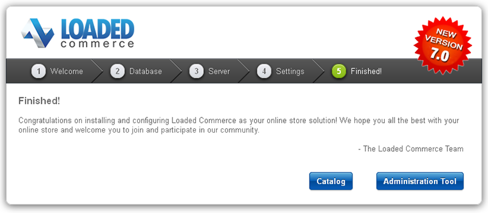If the configuration file is not writable, you can edit it manually through the FTP.
For security reasons you need to delete the /install/ directory on your hosting server.
If you have any issues, please refer to the Loaded 7 official guide.
Loaded 7 theme installation
Installing the theme without sample data
1. Getting the template ready.
Before you continue, please make sure that you've downloaded the template and unzipped it. You can check the guide on how to unzip your templates with WinZip and StuffitExpander.
Once the files have been extracted, you can start the template upload.
2. Installation.
1. Copy the contents of the theme (/admin and /templates) folder into the root of your Loaded 7 engine on your hosting server.
You can watch the video guides How to upload files to server with FTP and How to upload files to a server using cpanel (WebHost manager, WHM).
2. Log into your shop admin panel.
3. Navigate to the Settings -> Setup -> Templates tab, select the template you want to install and click the '+' button.
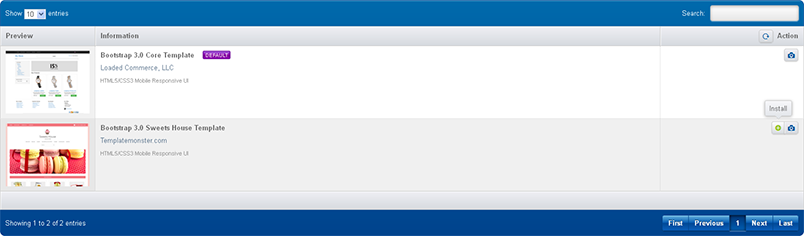
4. Having installed the template, click the 'Edit' button.
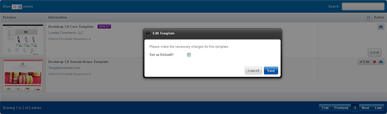
5. Check 'Set as default' and click the 'Save' button.
6. Go to the Settings -> System Tools -> Cache Control tab and select the 'All' option in the drop-down list.
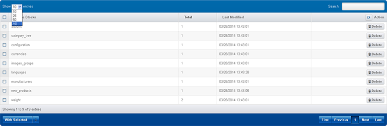
7. After this, select 'Cache Blocks' and in the 'With Selected' drop-down list, select 'Delete.'
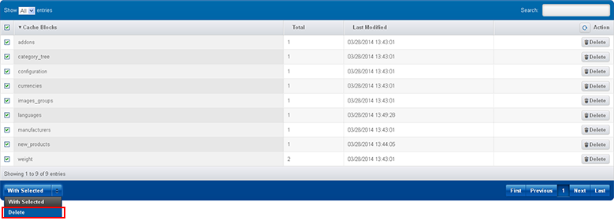
3. Blocks positioning
To have the template look like the demo, you need to postition all the blocks used in the theme into the positions described on the 'Template Configuration' page.
To set a block into a specific position, please follow these guidelines:
1. Go to the Settings -> Setup -> Templates Modules Layout -> Boxes tab or Content.
- Make sure you're editing the positions of the correct template.
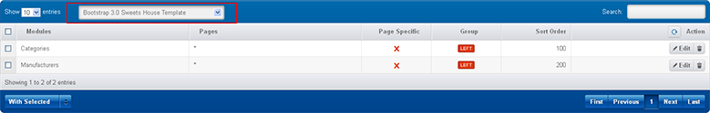
2. To add a module to a position, click the 'Add Template Module' button.
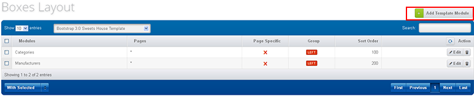
3. In the window which will appear, set the required module according to the instructions and click the 'Save' button.
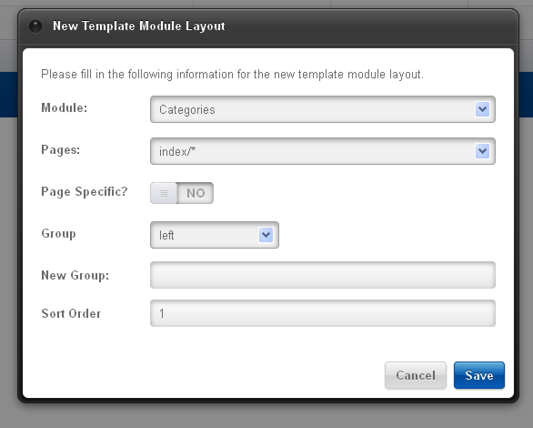
4. Repeat the steps for all required blocks.
Installing the theme with sample data
Having installed the sample data, you'll get a Loaded 7 based shop, completely identical to the one you see on the Demo. It will contain sample products, store settings, modules, etc.
Don't install the sample data into a working site! The data will replace all the products in your store and overwrite all the settings.
Before you continue, please make sure that you've downloaded the template and unzipped it. You can check the guide on how to unzip your templates with WinZip and StuffitExpander.
Once the files have been extracted, you can start the template upload.
1. Copy the contents of the theme (+sample data) folder (/admin, /templates and /images) into the root of your Loaded 7 engine on the hosting server.
You can watch the video guides How to upload files to server with FTP and How to upload files to a server using cpanel (WebHost manager, WHM).
2. Sample data installation.
-
The sample data is provided as an .SQL file, located in theme (+sample data) template folder and called dump.sql.
The dump.sql file can be installed with the phpMyAdmin tool or your hosting database management panel. You may need to check this guide: How to import sample data dump file.
-
Before the import, please make a backup copy of your database. You can watch a detailed video tutorial How to back up a database.
Make sure that your Loaded 7 release meets the template requirements. Otherwise, your database will be damaged.
After the completion of the dump.sql import, your store should look exactly like the Demo.